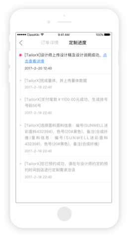

产品特色
- 高效率
-
TailorX将服装量体设计和定制打版由原先工厂套版流程转到门店设计师定制，而将工厂变为简单的流程生产，
从而实现大规模的个性化服装定制。将单件服装生产周期由传统的1个月左右缩短到7天。
- 低成本
-
TailorX通过用户发出款式需求、设计师量体设计打版、工厂按版生产的C2M模式，并用2年的实践经验探索出工厂定制工艺标准流程，
大大减少了工厂参与的步骤，从而将服装私人定制高悬不下的价格，降到传统定制价格的四分之一甚至更低。
- 覆盖广
-
TailorX将线下门店密布于写字楼、商业中心、社区住宅，实现上班或在家就可以享受服装定制体验。
实现每家门店覆盖1km范围内用户，颠覆平常商场服装购买形式，彻底解决传统私人定制距离远问题。

实时掌握定制进度

全程享受定制体验
清晰、可控、洞见您的服装设计理念；制衣过程您将开放、透明、直观的参与观赏；实时、在线、同步您的服装设计数据；与设计师一起将服装定制变成您的艺术创作
2017-2-20 12:40
工厂定制流程实时展示
可实时查看进度，服装是在裁剪、缝制或是整烫环节，颠覆性加入可时时跟踪查看质检和发货详情，保证您的全程参与
2017-2-20 12:40
7天完成定制流程
- 用户在APP选择心仪设计师，填写定制需求，同时上传参照图片后提交预约订单
- 用户在与设计师预约的时间抵达门店与设计师沟通定制需求，完成量体数据录入和面料选择
- 服装设计师根据用户需求进行服装版型制作，并将版型绘制成设计师稿及工艺说明
- 工厂接收订单开始生产，由跟单员到库房领料再分配生产线，订单进入到生产流水线进行裁剪缝制工艺
- 设计服装缝制完成后，会进入工厂整烫车间进行整烫和挂凉，成型后包装入库
- 通知第三方物流公司进行送货，用户可在app上查看物流信息
- 用户对定制体验和服装设计进行验收评价，如果不符合需求可要求发往工厂进行整改
用户定制故事
-
赵小跳（旅游体验师）
都说最迷人的姑娘是百变的，你摸不透自己到底有多了解她。
我就是这样一个姑娘，不看俗世眼光，不听旁人非议，我可以淘宝小碎花，拿起麦克风跟着音乐尽情摇摆，也可以踩着高跟鞋，在职场游刃有余。
我是特别独立但不特立独行的自己，从小妈妈就告诉我，女孩子要有自己的个性，不因富贵浮夸，也不因落魄自卑。在过去的很多年里，一直保持自己的个性，成为如今这个多面百变的自己。
简约或者普通的款式是日常穿搭的必备良品，一些时尚好用的小物件就可以使得整个扮相大不相同......
-
易奶奶（退休老人）
在奶奶那个年代，粗布手缝的外套，大多都是藏蓝或者纯黑，偶尔有手巧的女子，在自己的衣角绣上
一朵花或者用难得的彩色布料做一个印花的贴布已是潮流至极了。等到孩子们长大成家，时光也在她身
上留下了深刻的印记，本是一头青丝的窈窕少女已是银发苍苍步履蹒跚的老者。想着奶奶在花样的年纪都没有缤纷过
，作为晚辈，总觉得应该为她做点什么。不管是哪个时代，想来应该没有哪个女子不爱红装吧。
也许很多人会说，韶华不再，没必要耀眼闪亮。
可是谁说耋耄之年，就要放弃变美的追求呢？
......
-
William（市场营销）
愿你出走这半生，归去仍是少年郎
杰哥像这个城市的大多数人一样，背负着时光，背负着梦想，在离家1490公里的异乡，远离故乡的黄泥土，
在高楼林立的城市里做着让人艳羡却也辛苦无比的工作——和一群大学时的伙伴自主创业。
杰哥每每放假的时候都会回家看看，看看皱纹日渐清晰的父母亲人，在村头的田埂上站着发呆，畅想未来的日
子会是什么样子，想着想着就笑了，想着想着又哭了。会在回家的时候，陪爸妈一起散步，看着太阳从地平线落下，看
北归的大雁在夜幕下咿咿呀呀的飞过
......
线下门店